AI Support Agent — How to Use the App
A step-by-step guide with screenshots, for the AI Support Agent Longitudinal Study. Your research assistant will walk you through this at onboarding; keep it for reference afterward. Reminder: the AI support agent is not a therapist, doctor, or crisis service. If you ever need support, contact BYU CAPS (801-422-3035), call or text 988 (Suicide and Crisis Lifeline), or text HELLO to 741741 (Crisis Text Line).
1. The home screen
After you sign in you land on the home screen. Everything starts here:
- Start Session (bottom center) — begins a conversation with the AI support agent.
- Gear icon (next to Start Session) — opens Session Settings (voice, appearance, accessibility, memory; explained in section 6).
- Call 988 / Crisis Resources (top) — always one tap away, on every screen. Crisis Resources opens 988lifeline.org.
- Messages — private messages from the research/care team (section 8).
- Profile — your account, session history, and study options (section 7).
- Report a problem (bottom right) — tell the team about anything broken or confusing. Please use it freely; reports go straight to the developers.
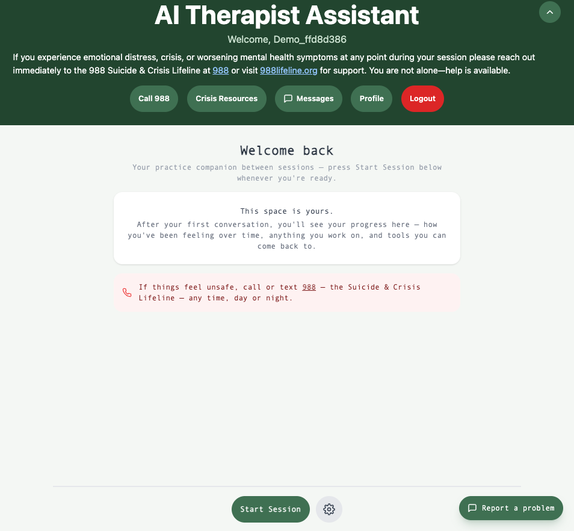
Once you have had a conversation or two, the home screen also shows a simple progress card — how often you have talked in recent weeks. These are brief check-ins over time, not a diagnosis or a grade.
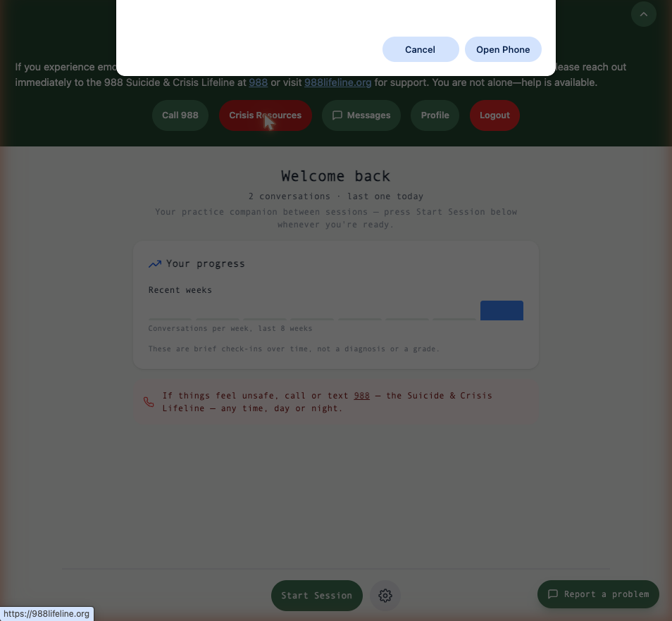
2. Starting a session: the reminder screen
The first time you start a session (and after consent updates), the app shows a short reminder of what you agreed to in your consent form: conversations are transcribed for the study, a researcher may monitor sessions live, session content is retained then redacted per the retention policy, the crisis protocol may show you resources and notify the team if you appear to be in danger, and voice sessions are audio-recorded. Tick the box and press I agree, start session — or Cancel if you'd rather not.
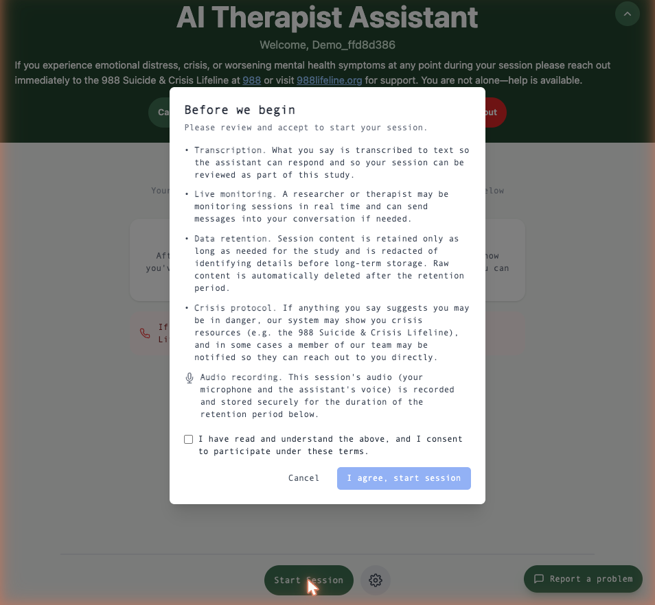
3. The quick check-in (optional)
Before each conversation you'll see a short optional check-in: a mood slider, "what's on your mind today?", and "anything you'd like to get out of today's conversation?". It helps the conversation start where you are — but you can leave any of it blank, or press Skip entirely. There are no wrong answers and it takes ten seconds.
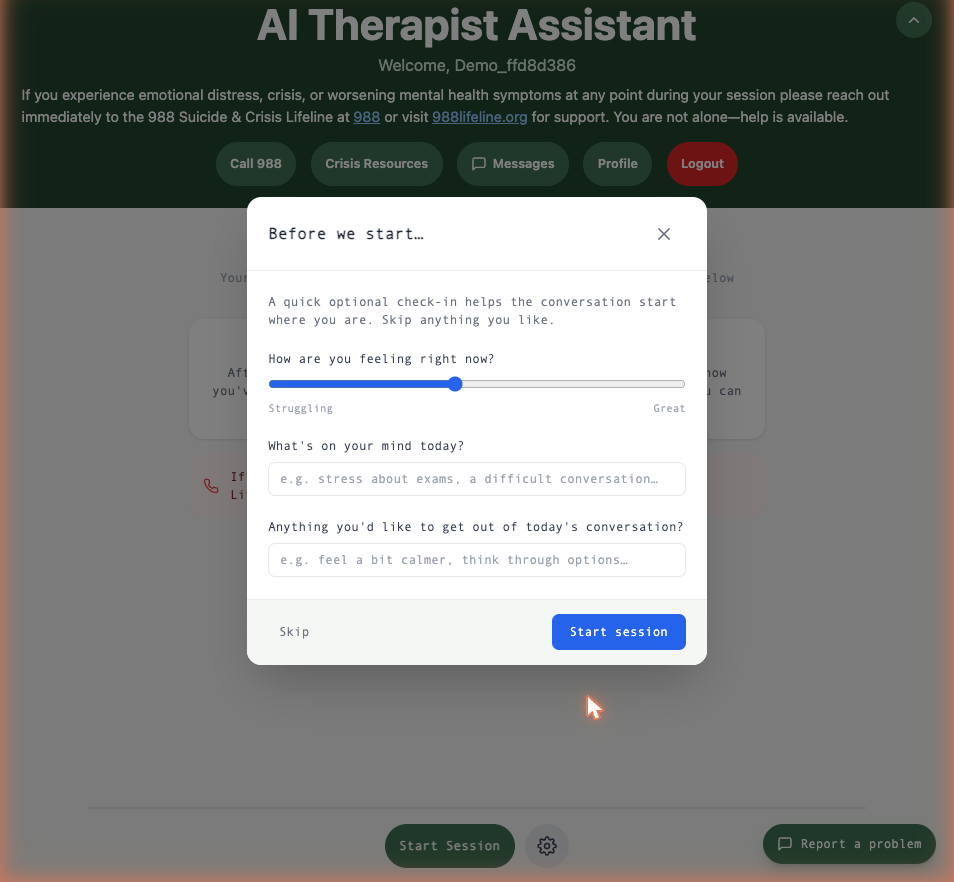
4. During a session
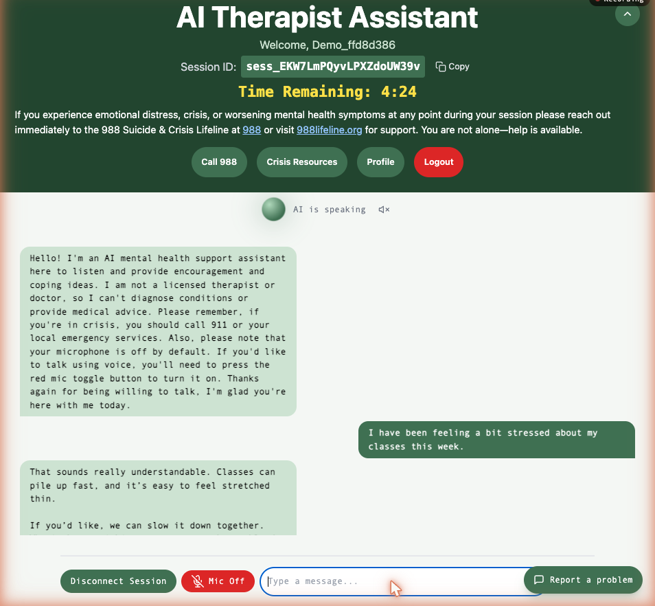
What you're looking at:
- Talk or type — your choice, any time. Your microphone starts off. Press the red Mic Off button to turn it on and speak; the AI talks back with the voice you chose in settings. Or just type in the message bar — you can mix both in one conversation.
- The AI introduces itself honestly. Every conversation starts with a reminder that it is an AI support tool, not a licensed therapist or doctor.
- Status bubble (top of the conversation) — shows whether the AI is listening, thinking, or speaking, and whether your mic is muted. The small speaker icon next to it mutes the AI's voice on your end.
- Time remaining — sessions have a length limit; the timer counts down so the ending never surprises you. The AI wraps up gracefully when time is nearly up.
- Recording badge (top right) — visible whenever audio is being recorded, so you always know.
- Session ID — a reference code for this conversation. You never need it, but if you report a problem it helps the team find what went wrong.
- Disconnect Session — ends the conversation whenever you want. You are always free to stop mid-sentence; nothing bad happens.
5. After a session: quick feedback
When a session ends you'll see three 1-to-5 questions (helpful? easy to use? use again?) and an optional comment box. It takes fifteen seconds and genuinely shapes the research — but like everything else, you can press Skip.
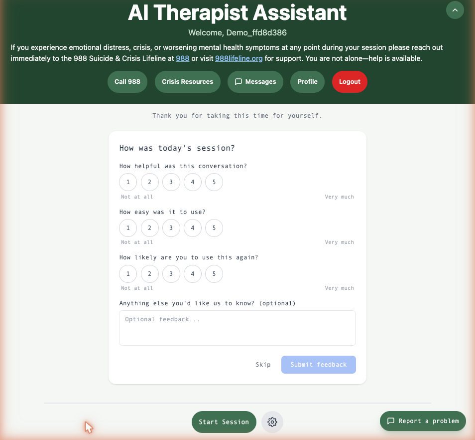
6. Session Settings
Open with the gear icon next to Start Session. Settings are locked during a live session — end the conversation first if you want to change something. None of these choices affect your safety protections, your compensation, or what the study measures; they are comfort preferences.
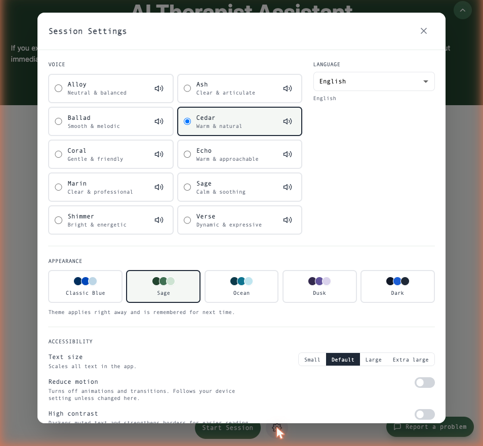
- Voice — ten voices to choose from (Alloy, Ash, Ballad, Cedar, Coral, Echo, Marin, Sage, Shimmer, Verse). Tap the small speaker icon next to any voice to hear a preview. Every voice is the same agent with the same safeguards — pick whichever is most pleasant to listen to. Applies to your next conversation.
- Language — English for this study.
- Appearance — five color themes (Classic Blue, Sage, Ocean, Dusk, Dark). Colors only; applies right away and is remembered for next time.
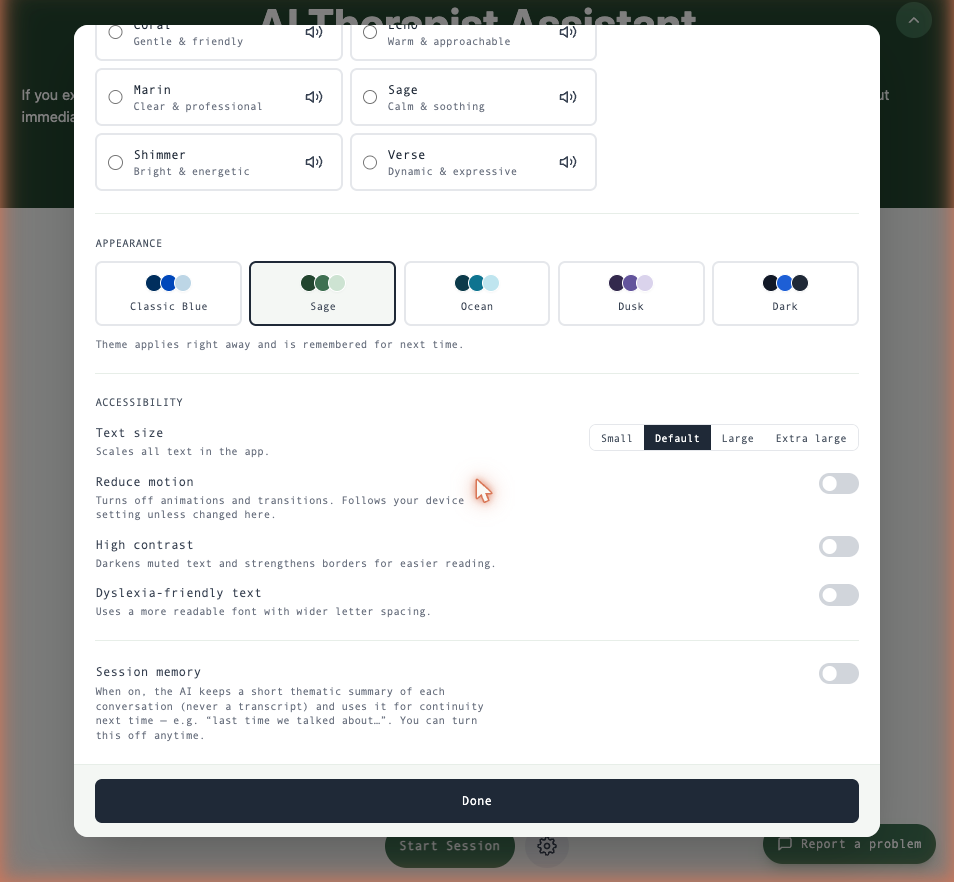
- Text size — Small, Default, Large, or Extra large; scales all text in the app.
- Reduce motion — turns off animations and transitions. Follows your device's own setting unless you change it here.
- High contrast — darkens muted text and strengthens borders for easier reading.
- Dyslexia-friendly text — a more readable font with wider letter spacing.
- Session memory — the one setting that changes what the AI remembers between conversations. When on, it keeps a short thematic summary of each conversation (never a transcript) and uses it for continuity next time ("last time we talked about…"). When off, every conversation starts fresh. You can switch it any time; turning it off stops future continuity but does not change the study's data collection, which is described in your consent form.
7. Your Profile
The Profile button (top of the home screen) shows your account information, session statistics, and a searchable history of your conversations. This is also where study options live: changing your password, and — if you ever want a break from the study — a "Leaving the study or need a break?" link that opens a one-minute survey where you can pause or withdraw. Pausing or withdrawing is always allowed, never penalized, and you keep all compensation already earned.
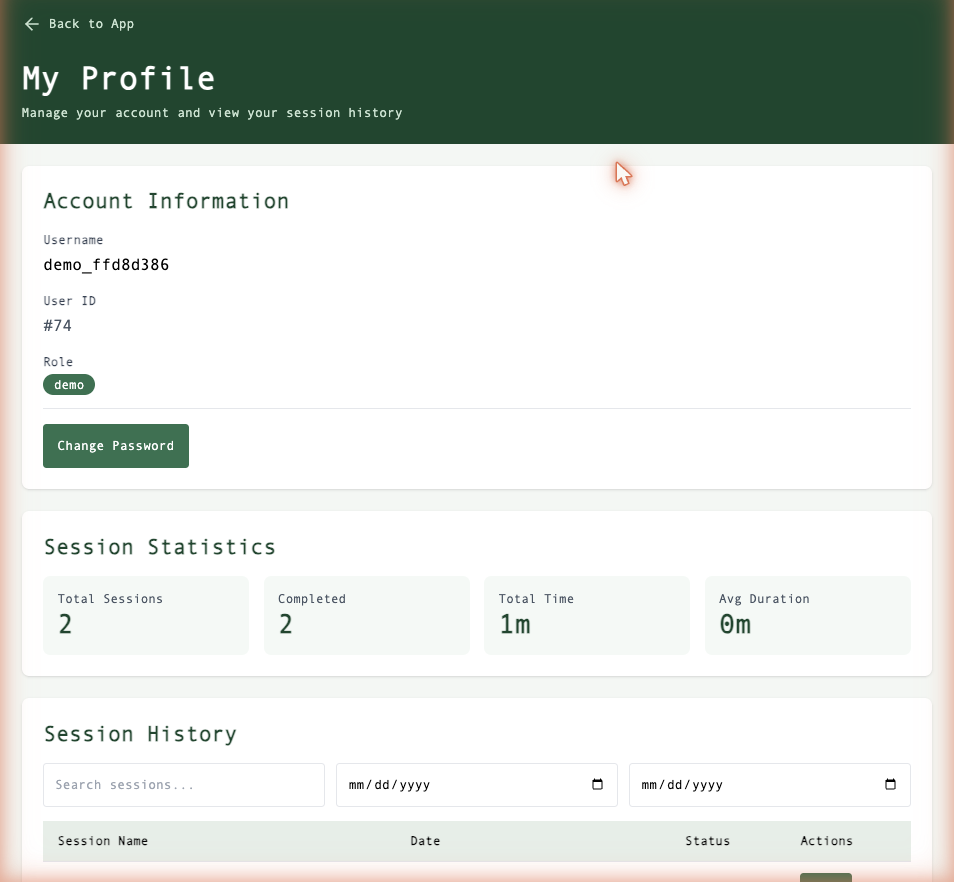
8. Messages
The research/care team can send you private messages here, and you can reply. Messages are answered within 1-2 business days and are not monitored in real time — if you need help right now, call or text 988, or text HOME to 741741.
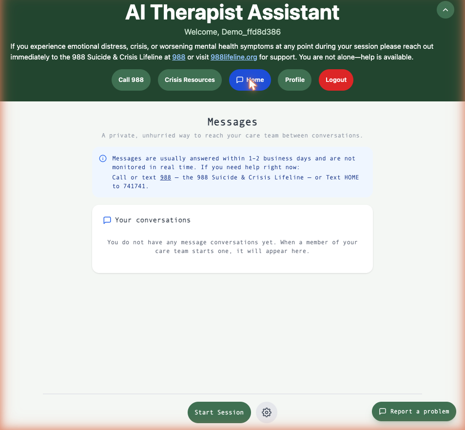
9. Safety, always
- Call 988 and Crisis Resources buttons are on every screen, and the crisis banner with 988 information stays visible at all times.
- If a conversation suggests you may be in danger, the app shows crisis resources immediately and a trained researcher may be notified so they can reach out — this is the crisis protocol you consented to.
- The app closes overnight (10:00 PM to 6:00 AM Mountain Time). If you need support during those hours, use 988, the Crisis Text Line, or BYU CAPS (801-422-3035).
10. If something goes wrong
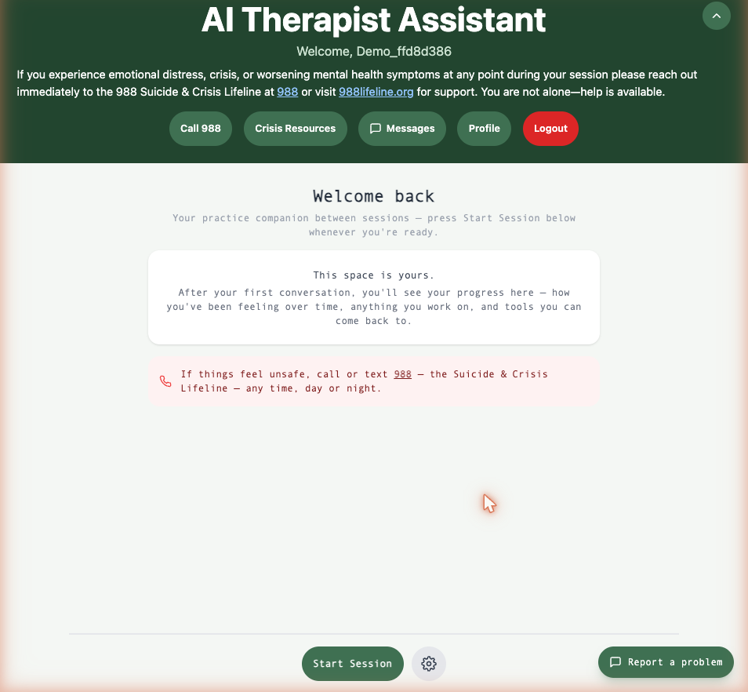
- "We could not access your microphone" — your browser has not given the site mic permission. Click the icon left of the web address, allow Microphone, and try again (or just type instead — sessions work fully by text).
- Conversation freezes or drops — refresh the page and press Start Session again; if it persists, use Report a problem.
- Anything else odd — the Report a problem button (bottom right, every screen) sends a note straight to the developers. Include what you were doing; the session ID is attached automatically.
11. Your weekly rhythm in the study
- Use the app whenever you like — we suggest about two short conversations a week, but it is entirely up to you.
- Once a week you'll get a 5-minute check-in survey by email (weeks 1-8), plus an exit survey at week 8 and one follow-up at week 12. Reminder emails include your personal survey link.
- Questions any time: contact the research team (details on your consent form) — or ask the AI itself how the app works; it is happy to explain.
Screenshots were taken in the study's demonstration environment; the app you use looks identical. Document version 2026-09-04.